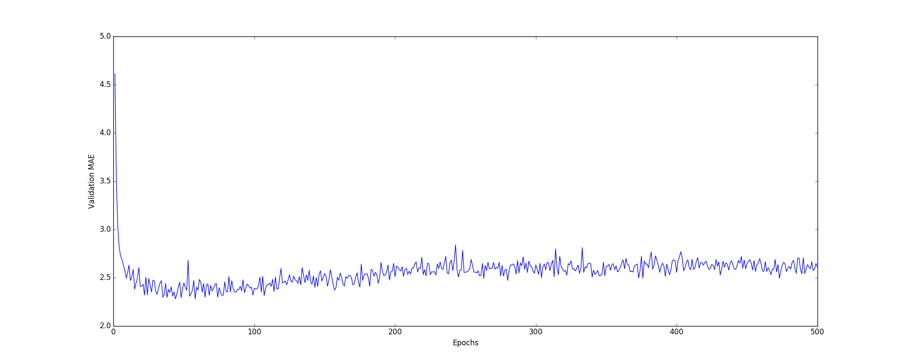
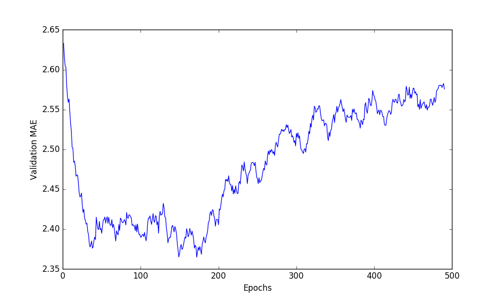

前言
预测房价是一个回归问题，本例采用20世纪70年代中期波士顿房价数据集（boston_housing)，主要去预测房屋价格的中位数。并已知当时该郊区的一些数据点，如犯罪率、当地房产税率等。这些数据点（特征）都有不同的取值范围。该数据集样本数量较少，只有506个，分为404个训练样本和102个测试样本。
正文
数据预处理
因为各个特征的取值范围差异很大，如果直接输入，网络会自动适应取值不同的数据，学习效果会很差。所以，我们需要对每个特征进行标准化。
标准化：（输入的每个特征-特征平均值）/ 标准差1
2
3
4
5
6
7
8# 数据预处理 标准化
mean = train_data.mean(axis=0)
train_data -= mean
std = train_data.std(axis=0)
train_data /= std
test_data -= mean
test_data /= std
构建网络+编译
本例网络采用两个隐藏层，一个输出层；
隐藏层：采用Dense（全连接），隐藏单元均为64，激活函数为Relu；
输出层：采用Dense，隐藏单元为1，无需激活函数，是一个线性层。这是标量回归（标量回归是预测单一连续值的回归）典型设置。
编译采用：
优化器：rmsprop
损失函数：MSE（mean squared error）
衡量指标：MAE（mean absolute error）1
2
3
4
5
6
7def build_model():
model = models.Sequential()
model.add(layers.Dense(64,activation='relu',input_shape=(train_data.shape[1],)))
model.add(layers.Dense(64,activation='relu'))
model.add(layers.Dense(1))
model.compile(optimizer='rmsprop', loss='mse', metrics=['mae'])
return model
模型训练
因为本例的训练集数量过少，所以采用K折交叉验证来进行模型的评估。1
2
3
4
5
6
7
8
9
10
11
12
13
14
15
16
17
18
19
20
21
22
23
24
25# K折交叉验证
k = 4
num_val_samples = len(train_data) // k
num_epochs = 500
all_mae_histories = []
for i in range(k):
print('processing fold #', i)
val_data = train_data[i * num_val_samples: (i + 1) * num_val_samples]
val_targets = train_targets[i * num_val_samples : (i + 1) * num_val_samples]
partial_train_data = np.concatenate(
[train_data[: i * num_val_samples],
train_data[(i + 1) * num_val_samples:]],
axis=0)
partial_train_targets = np.concatenate(
[train_targets[:i * num_val_samples],
train_targets[( i + 1 ) * num_val_samples:]],
axis=0)
model = build_model()
history = model.fit(partial_train_data, partial_train_targets,
validation_data=(val_data, val_targets),
epochs=num_epochs, batch_size=1,verbose=0)
mae_history = history.history['val_mean_absolute_error']
all_mae_histories.append(mae_history)
结果与分析
计算所有轮次中的K折验证分数平均值1
2average_mae_history = [
np.mean([x[i] for x in all_mae_histories]) for i in range(num_epochs)]
（以前从未发现还可以这样用TAT）
绘制的验证分数如下：

由该图发现，前十个点的取值范围与其他点不同，需删除；纵轴的范围过大，且数据方差也过大，难以看清图的规律，故我们采用指数移动平均值（EMA）来得到光滑的曲线。1
2
3
4
5
6
7
8
9def smooth_curve(points, factor=0.9):
smoothed_points = []
for point in points:
if smoothed_points:
previous = smoothed_points[-1]
smoothed_points.append(previous * factor + point * (1 - factor))
else:
smoothed_points.append(point)
return smoothed_points
1 | smooth_mae_history = smooth_curve(average_mae_history[10:]) |
再次绘制的验证分数如下：

由此发现，在第180轮后，不再显著降低（书上得出的结果和我的不同），之后开始过拟合。因此我们继续调整模型，epochs=180，并在测试集上进行测试，最后MAE为：2.7016119021995393 。在实际价格范围在10000~50000美元，预测房价与实际相差为2700美元左右。
源代码
1 | from keras.datasets import boston_housing |
后记
- 特征数据范围差异过大时，需要对特征进行标准化或归一化；
- 回归问题常用的损失函数是均方误差（MSE），常用的回归指标是平均绝对误差（MAE）；
- 数据过少时，可以采用K折交叉验证；
- 在绘制图形时，若遇到纵轴范围较大，可以采用指数移动平均值（EMA）来得到光滑的曲线。